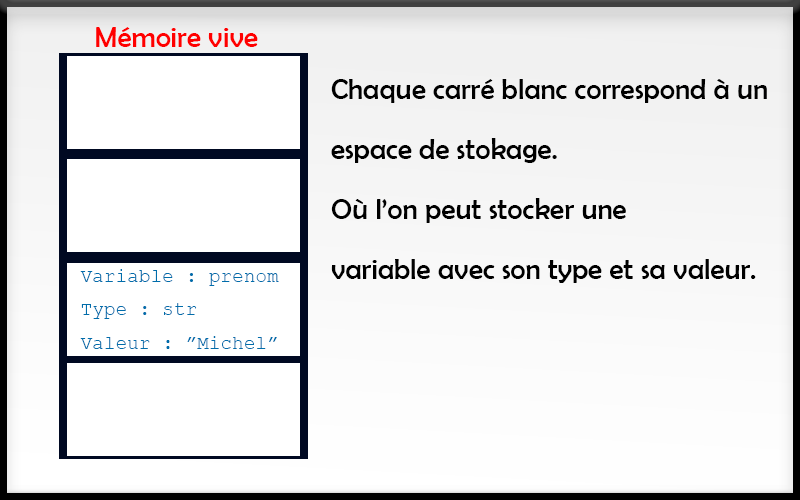
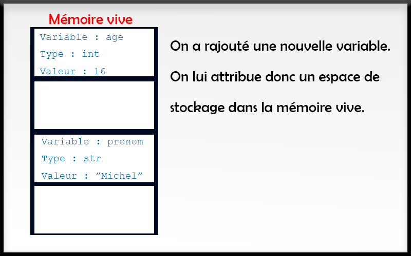
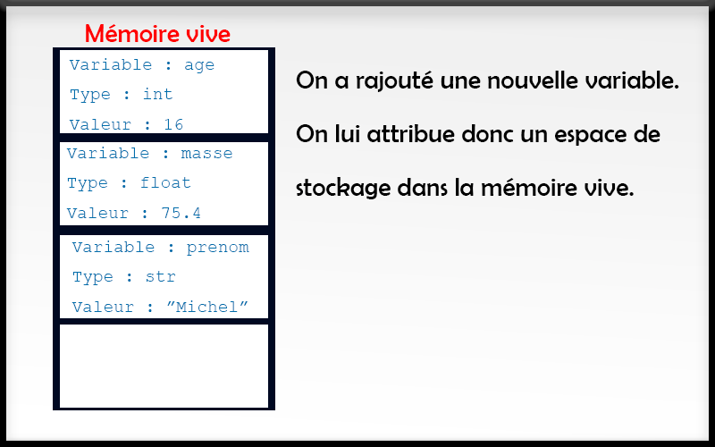
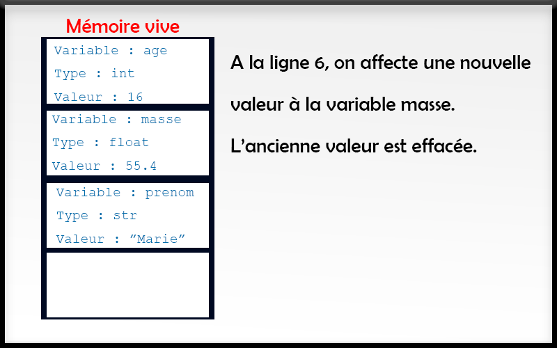

Chapitre 4 – Programmation en Python
Variables, lecture et écriture (1/2)
1 Écriture : le flux de sortie
▶ Guide vidéo de la séance Astuce : ouvre le guide dans une fenêtre et cette page dans une autre pour suivre plus facilement.
L’instruction print("Mon texte") permet d’afficher le texte Mon texte dans la console Python. Exécute le programme ci-dessous pour observer ce qu’il fait, en appuyant sur le triangle vert.
L’endroit où s’affiche le résultat est la console d’exécution (en Python, on parle aussi d’interpréteur). L’endroit où tu saisis ton programme est l’éditeur de texte.
Change maintenant le texte situé entre les guillemets par un texte de ton choix : ce qui s’affiche correspond bien au texte que tu as écrit.
print est l’instruction qui permet d’afficher du texte à l’écran. Le texte est placé entre parenthèses et entre guillemets : c’est une chaîne de caractères, l’information que reçoit l’instruction print.
L’ordinateur écrit de l’information. C’est un flux de sortie, car l’information va de l’ordinateur vers l’écran.
Exercice 1
En t’inspirant de l’exemple ci-dessus, affiche dans la console Python le texte : Hello World !
Voir la correction
Exercice 2
Affiche dans la console Python le texte suivant, en respectant les sauts de ligne :
Quisque eleifend elit nec odio malesuada, in tristique elit tristique.
Proin malesuada risus id iaculis pharetra.
Aenean bibendum leo quis justo faucibus, id condimentum arcu euismod.
Sed semper purus at fringilla interdum
Voir la correction
Remarque : ajouter \n dans une chaîne de caractères permet d’obtenir un saut de ligne.
Voir la correction avec \n
2 Les variables informatiques
Pour stocker de l’information sur un ordinateur, nous avons besoin d’un « outil » qui s’appelle une variable. Une variable a plusieurs caractéristiques :
- Elle stocke de l’information. Cette information est conservée dans la mémoire vive (RAM), à une adresse mémoire.
- Elle a un type. L’information peut être :
- un nombre entier (type
int) ; - un nombre décimal (type
float) ; - une chaîne de caractères, c’est-à-dire du texte (type
str) ; - etc.
- un nombre entier (type
- Elle est définie par un nom. Elle peut être appelée dans le programme et sa valeur peut évoluer : l’espace de stockage reste le même dans la RAM, mais l’information qu’il contient peut être modifiée. Par convention, le nom d’une variable commence par une minuscule, sans espace et sans accent.
Pour affecter une information à une variable, on utilise en Python le signe =. Il est différent du « = » mathématique. Étudions quelques exemples.
Exemple 1
prenom = "Michel"
Le nom de la variable est prenom. Un espace de stockage est créé dans la RAM et associé à prenom. On lui affecte la chaîne de caractères « Michel » (type str).

Exemple 2
age = 16
La variable age est de type entier (int) et a pour valeur 16. Cette valeur est stockée dans l’espace mémoire dédié à age.

Exemple 3
masse = 75.4
La variable masse est de type flottant, c’est-à-dire un nombre décimal (float), et a pour valeur 75,4.

Tes variables restent dans la mémoire vive tant que le programme est ouvert (ou en cours d’exécution). Chaque espace de stockage de la mémoire vive possède une adresse.
Exemple complet
Pour afficher la valeur d’une variable, on utilise aussi l’instruction print. Exécute le programme ci-dessous et observe le résultat.
Dans l’instruction print, certains éléments sont entre guillemets : ce sont des chaînes de caractères, affichées telles quelles. Si l’on enlève les guillemets, on demande à print de récupérer l’information stockée dans la variable correspondante. Pour afficher plusieurs éléments, on les sépare par des virgules. Il est important de respecter la syntaxe du langage, sinon le programme ne peut pas s’exécuter.
Exécutons le programme suivant :
À l’exécution, la 6e instruction n’affiche pas le prénom Michel ni la masse 75,4. En effet, les variables prenom et age ont reçu une nouvelle valeur aux lignes 5 et 6.
Les instructions d’un programme s’exécutent dans l’ordre où elles sont écrites : chaque ligne correspond à une instruction. Observons l’état de la mémoire vive ligne après ligne.


Une variable a un nom, un type et une valeur. Pour faire évoluer automatiquement les valeurs stockées, il faut effectuer des opérations : c’est l’objet de la séance suivante.